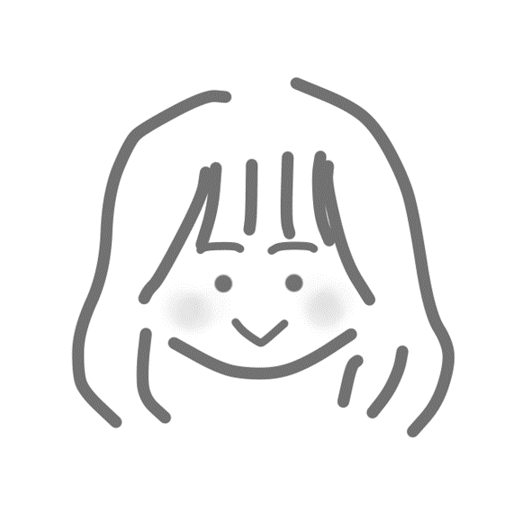

What's New
- 2024/04/11
- HPを作成しました！！NEW
About
自己紹介
はじめまして，SAKANE AMI'S PAGEにご訪問いただきありがとうございます．
現在，静岡大学大学院 情報学専攻 修士1年生です．狩野研究室で自然言語処理（NLP）の研究を行っております．
NLPの技術・開発・研究に興味があり，今は，WEBアプリ開発に挑戦したいと思っています！
Research
研究
| 卒業研究（2024年） | 『異なるトークナイザを用いた大規模言語モデルの事前学習』 |
|---|---|
| 2023年度人工知能学会全国大会（第37回） | 『新型コロナ感染症発生届の分析-記載における非効率と自然言語処理による解決への課題と展望-』 |
| 言語処理学会 第29回年次大会（2023年3月） | 『医療文書における数値表現のトークン化によるICDコード予測と医療タスクへの応用検証』 |
Award/Qualification
表彰/資格
- 2024年3月 成績優秀により学部長賞受賞
- TOEIC Score 725
Work

準備中・・・

準備中・・・

準備中・・・

準備中・・・
準備中・・・
Other
その他の活動
- 2021年 フィリピンGITC夏季オンライン研修参加
- 2020年 国際連携推進機構「話っ、輪っ、和っ！」実行委員
Contact
お問い合わせは以下までお願いいたします．
asakane@kanolab.net